library(tidyverse)
library(haven)
hoorn <- read_sav("data/Hoorn.sav") |>
mutate(across(where(is.labelled), as_factor))1 Data visualiseren in R
1.1 Introductie
In deze video gaan we in op de basis van het visualiseren van gegevens met behulp van ggplot2. Dit is niet de standaard ingebouwde manier om te visualizeren in R, maar wel een van de meeste gebruikte en flexibele manier. ggplot() maakt, net als o.a. dplyr uit van de tidyverse. We hoeven de package dus niet apart in te laden als we tidyverse al in geladen hebben.
Wat aan bod gaat komen in deze tutorial:
ggplot syntax
Veel gebruikte plot technieken
Histogram
Boxplot
Staafdiagram
Scatterplot
Stratificeren
- Facets
Plot vormgeving
- Labels
Voor de gehele tutorial maken we gebruik van de ‘Hoorn’ dataset, een random sample van een groot prospectief cohortonderzoek naar de ontwikkeling van diabetes type-II in de omgeving Hoorn. Voor deze tutorial laden we twee pakketen in: tidyverse en haven. De eerste is nodig omdat deze o.a. ggplot() zelf bevat, terwijl haven gebruikt kan worden om het SPSS bestand van de Hoorn studie in te laden.
1.2 Opbouw van ggplot syntax
ggplot begint altijd met de overkoepelende ggplot() functie. Het eerste, en misschien wel belangrijkste argument is het specificeren van de dataset:
ggplot(data = hoorn)
Als we deze code draaien, dan zien we dat we een leeg canvas krijgen. Dat komt omdat we behalve de data verder niks hebben gespecificeerd. De volgende stap is het vaststellen van de ‘aesthetic mapping’, wat inhoudt dat we elementen van vormgeving willen koppelen aan variabelen uit de dataset.
Laten we beginnen met het bekijken van de verdeling van leeftijd, een continue variabele, a.d.h.v een histogram. In een histogram komen de waarden van de variabelen die we willen beschrijven op de x-as. Dat kunnen we in ggplot() aangeven door het mapping = argument, gevolgd door de aes() functie, wat afgekort is voor ‘aesthetic’. Binnen aes() geven we vervolgens aan welke variabelen, welke rol in de plot krijgen. In ons geval willen we dat age vertegenwoordigd gaat worden door de x-as.
ggplot(data = hoorn,
mapping = aes(x = age)
)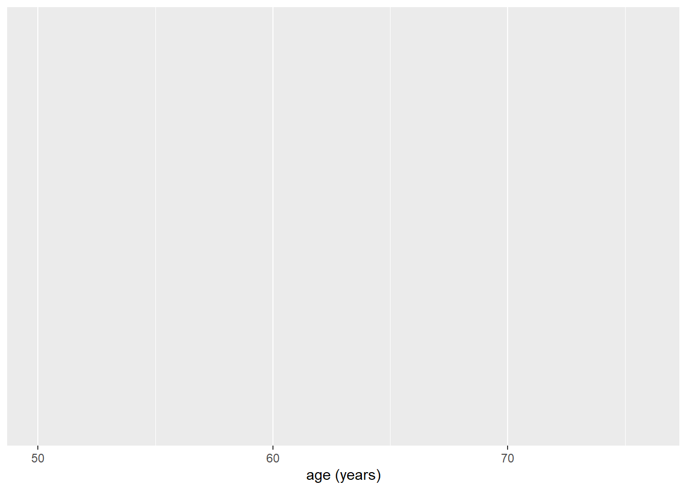
Als we nu de code draaien zien we dat we nu een x-as hebben gekregen met leeftijd in jaren, maar verder nog helemaal niks. Het laatst wat we nu moeten doen om een plaatje te krijgen, is het oproepen van een zogeheten geom() wat afgekort ‘geometric’ object betekent. Er bestaan een heleboel geoms, waarvan wij nu met geom_histogram() gaan werken. We kunnen de geom() toevoegen aan de ggplot(), door deze er bij ‘op te tellen’, als een soort nieuwe laag die we over het grijze canvas heen plakken:
ggplot(data = hoorn,
mapping = aes(x = age)
) +
geom_histogram()`stat_bin()` using `bins = 30`. Pick better value `binwidth`.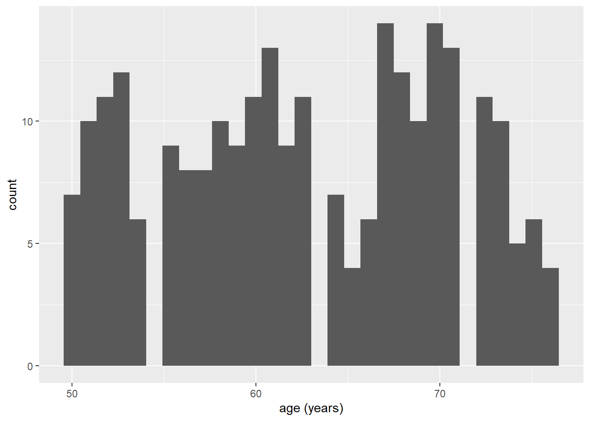
Nu hebben we ons eerste plaatje! Doordat we geom_histogram() hebben gebruikt, heeft ggplot() automatisch bedacht dat de y-as het aantal proefpersonen moet vertegenwoordigen (gelabelled als ‘count’). Tot slot zien we dat we ook een ‘message’ hebben gekregen die luidt: 'stat_bin() using 'bins = 30'. Pick better value 'binwidth'. Dit houdt in dat de functie automatisch van 30 staven is uitgegaan, en dat je dit aantal zelf kunt instellen met het bins = argument, of door zelf de wijdte van de categorieën in te stellen met binwidth = argument.
Oefening: maak de grafiek twee keer na, waarbij je binnen de geom_histogram() functie voor bins = 20 kiest, en voor bins = 40. Bij hoeveel bins vind je het plaatje het duidelijkst?
1.3 Figuren voor verschillende datatypen
1.3.1 Continue data visualiseren: de boxplot
Een andere manier om continue gegevens, zoals leeftijd, te visualiseren is met behulp van een ‘boxplot’. Ook voor dit type visualisatie heeft ggplot() een aparte geom: geom_boxplot(). We kunnen de geom_histogram() eenvoudig omwisselen voor de geom van de boxplot:
ggplot(data = hoorn,
mapping = aes(x = age)
) +
geom_boxplot()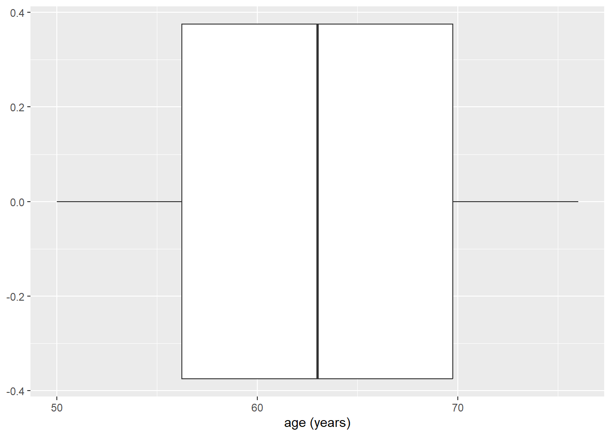
Het enige wat je nu misschien opvalt is dat de boxplot horizontaal ligt, in plaats van de wat gebruikelijkere (maar niet noodzakelijke) verticale positie. Dit kun je eenvoudig aanpassen door leeftijd op de y-as, i.p.v. de x-as te zetten:
ggplot(data = hoorn,
mapping = aes(y = age)
) +
geom_boxplot()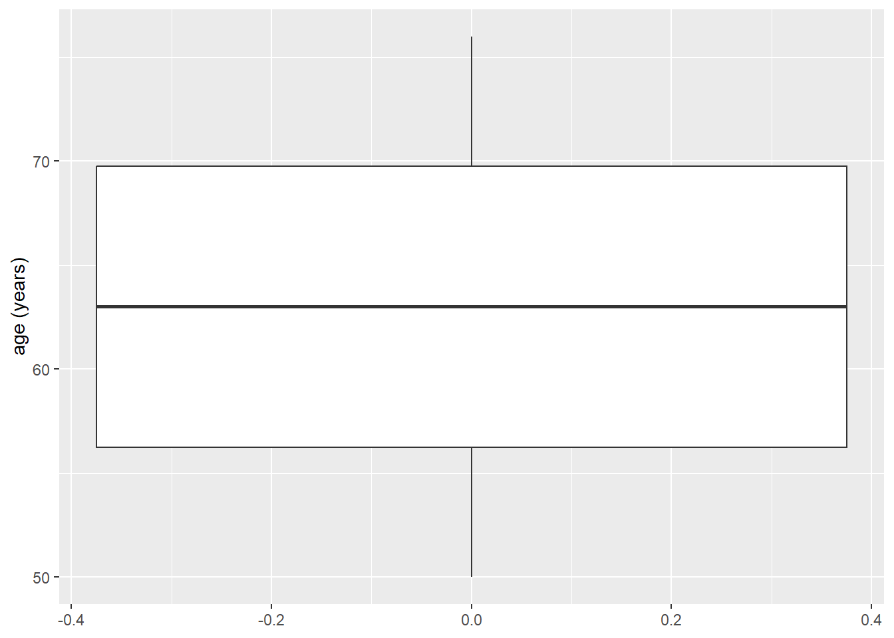
De boxplot is een beetje groot, en niet zo heel mooi, maar dat laten we voor nu even zitten.
Oefening: maak nog eens een histogram, waarbij je leeftijd op de y-as zet. Wat gebeurt er?
1.3.2 Categoriale gegevens visualiseren: de staafdiagram
Tot dusver hebben we naar twee geoms gekeken die we kunnen gebruiken voor continue data, maar wat als we categoriale gegevens hebben, zoals bijvoorbeeld huwelijksstatus (mar_st). In dat geval kunnen we bijvoorbeeld een staafdiagram gebruiken: geom_bar().
ggplot(data = hoorn,
mapping = aes(x = mar_st)
) +
geom_bar()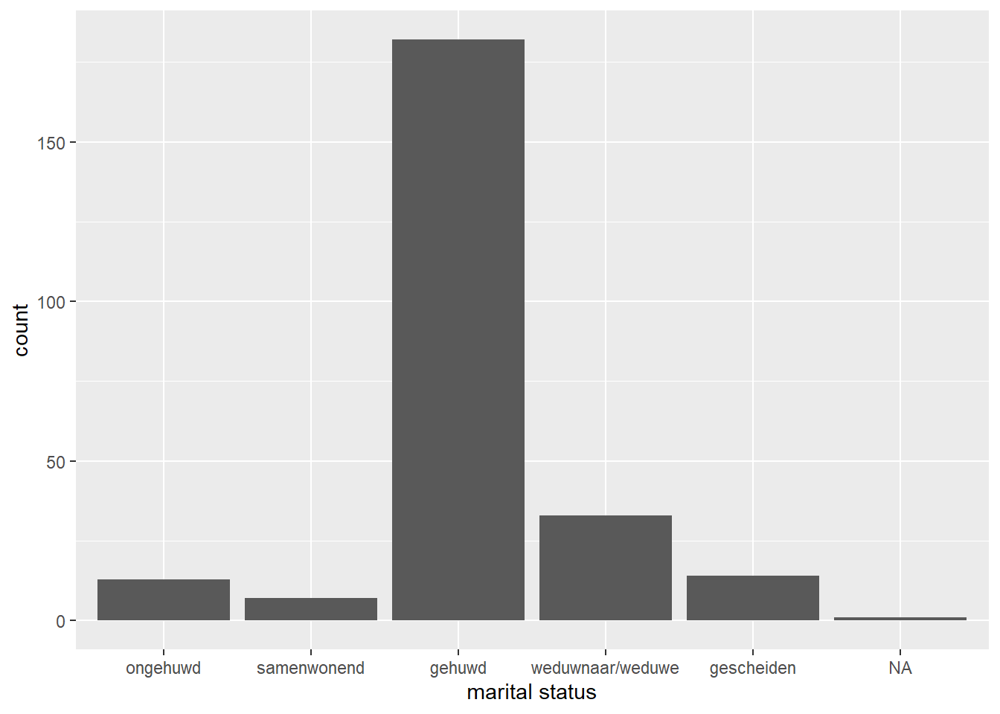
We zien een aantal zaken: als eerste hebben we een ‘warning’ gekregen die luidt: ‘Removed one row containing non-finite outside the scale range (stat_count()). Dit houdt in dat geom_bar() een niet-eindige waarde heeft verwijderd die niet op de schaal voorkomt. In vrijwel alle gevallen gaat het dan vaak om een’NA’ waarde, NA staat voor not available en is een missende waarneming waar R niet mee kan rekenen. Het tweede wat we zien is dat de categorieën geen naam hebben, maar getallen… dat is natuurlijk een beetje onhandig, want wat betekent huwelijksstaat ‘3’? Daar zullen we later op terug komen bij ‘plotjes vormgeven’.
Er is voor de staafdiagram nog één ander punt wat we gaan bekijken: proporties. In de vorige grafiek kunnen we zien wat de absolute aantallen van mensen zijn per categorie, maar wat als we willen weten wat de relatieve (proporties of percentages) zijn? geom_bar() maakt standaard gebruik van de stat_count() functie, m.a.w. het tellen van absolute aantallen. We kunnen die functie ook handmatig instellen, als we iets anders willen.
ggplot(data = hoorn,
mapping = aes(x = mar_st, y = after_stat(prop))
) +
geom_bar()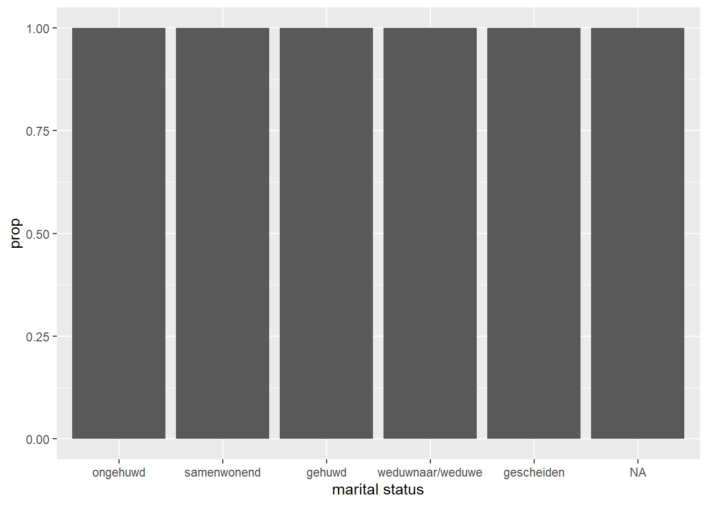
Hierboven hebben we nu handmatig de y-as ingesteld, iets wat we niet hoefde te doen, maar omdat we nu een andere methode willen gebruiken, moeten we dat specifiek benoemen. Nu zien we dat we de proporties per balk hebben berekend, t.o.v. het totaal.
Oefening: Probeer eens te kijken of je i.p.v. proporties, percentages kunt krijgen in de staafdiagram. Wat moet je doen om van proporties naar percentages te gaan?
1.3.3 Samenhang tussen twee variabelen visualiseren: de scatterplot
Tot dusver hebben we visualizaties gemaakt van enkele variabelen. Maar wat als we twee variabelen aan elkaar willen relateren? Daar zijn veel verschillende opties voor, maar een van meest voorkomende is de scatterplot, geom_point(). Laten we gaan kijken naar de samenhang tussen twee continue gegevens: leeftijd (op de x-as) en systolische bloeddruk (op de y-as). Naast dat we x = age specificeren binnen aes(), specificeren we nu ook y = sbp1s.
ggplot(data = hoorn,
mapping = aes(x = age, y = sbp1s)) +
geom_point()Warning: Removed 1 row containing missing values or values outside the scale range
(`geom_point()`).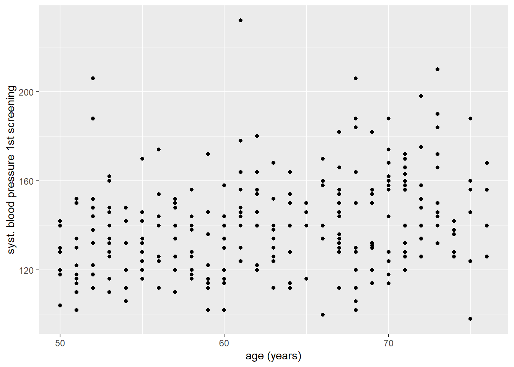
Met de resulterende scatterplot kunnen we al enigszins een positieve relatie tussen leeftijd en bloeddruk zien, maar om dat iets duidelijker te maken kunnen we nog een regressielijn laten in tekenen. Dit kunnen we doen door een extra geom() over onze bestaande plot heen te leggen: in dit geval geom_smooth(). Met deze geom kunnen we de samenhang tussen twee variabelen samenvatten met behulp van een schattingsmethode die we met het argument method = kunnen aangeven. In ons geval gaan we method = "lm" gebruiken, wat voor ‘linear model’ staat.
ggplot(data = hoorn,
mapping = aes(x = age, y = sbp1s)) +
geom_point() +
geom_smooth(method = "lm")`geom_smooth()` using formula = 'y ~ x'Warning: Removed 1 row containing non-finite outside the scale range
(`stat_smooth()`).Warning: Removed 1 row containing missing values or values outside the scale range
(`geom_point()`).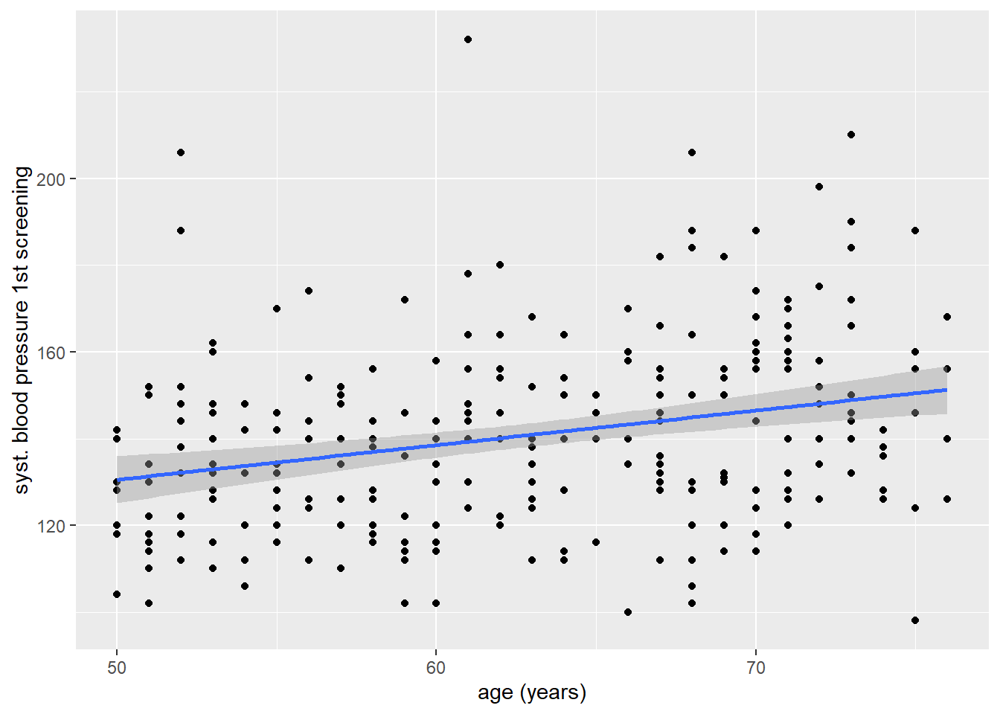
Et voila, nu zien we inderdaad dat er sprake is van een positief verband, ook met behulp van een lineair model.
Oefening: Maak de scatterplot eens opnieuw, maar nu zonder het argument method = "lm". Wat voor plaatje krijg je nu?
1.4 Stratificeren:
1.4.1 Stratificeren met met kleur
Nu gaan we nog een laatste uitbreiding bekijken die we met grafieken kunnen doen: stratificeren. Dit houdt in dat we plaatjes aanpassen op basis van een derde variabelen, door bijvoorbeeld bepaalde puntjes in scatterplot een kleur te geven op basis van waarden van een derde variabele. Laten we de scatterplot van het vorige voorbeeld eens inkleuren op basis van geslacht. Aangezien we een esthetisch kenmerk willen koppelen aan waarden van een variabele, moeten we dit weer doorgeven in het mapping = aes() argument van ggplot(). Dit doen we door naast x en y definiëren, ook color te koppelen aan een variabele:
ggplot(data = hoorn,
mapping = aes(x = age, y = sbp1s, color = gender)) +
geom_point() +
geom_smooth(method = "lm")`geom_smooth()` using formula = 'y ~ x'Warning: Removed 1 row containing non-finite outside the scale range
(`stat_smooth()`).Warning: Removed 1 row containing missing values or values outside the scale range
(`geom_point()`).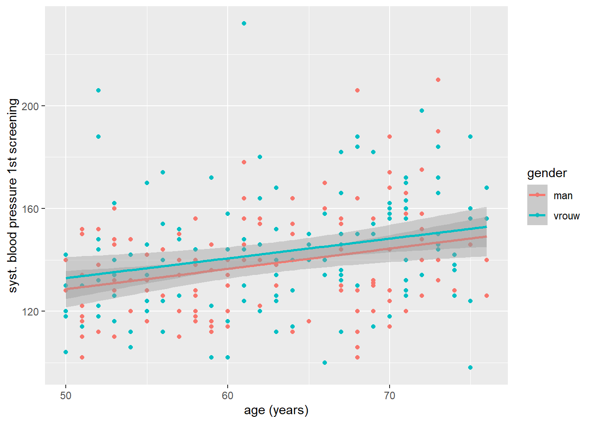
Dat ziet er al goed uit: maar de legenda is een beetje vreemd! Het lijkt erop alsof gender als een continue variabele wordt gezien. We zien ook in de warnings dat ggplot niet in staat is geweest om de juiste groepering in de data te vinden. Om dit op te lossen kunnen we geslacht binnen ggplot() in een catergoriale variabele (factor) te veranderen met factor():
ggplot(data = hoorn,
mapping = aes(x = age, y = sbp1s, color = factor(gender))) +
geom_point() +
geom_smooth(method = "lm")`geom_smooth()` using formula = 'y ~ x'Warning: Removed 1 row containing non-finite outside the scale range
(`stat_smooth()`).Warning: Removed 1 row containing missing values or values outside the scale range
(`geom_point()`).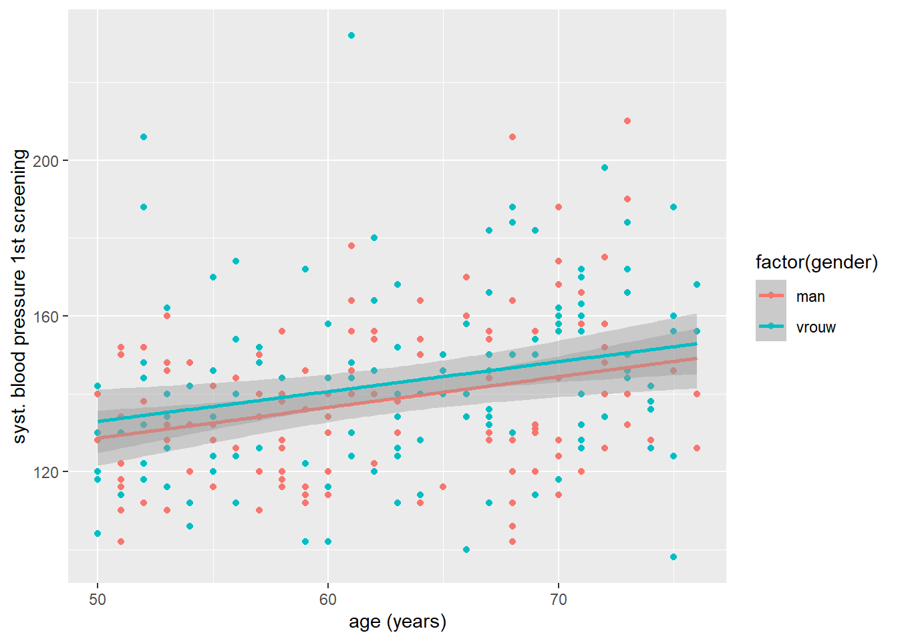
Dat ziet er een stuk beter uit: de punten zijn nu ook in duidelijk te onderscheiden kleuren gekleurd, en we zien gelijk een andere krachtige eigenschap van ggplot(). Ondanks dat we twee geoms gebruikt hebben, worden de eigenschappen die we in de ggplot() hebben gespecificeerd voor beiden mee genomen. Het enige wat we nu nog aan de plot kunnen verbeteren is dat we het legenda labelen, waar we straks op terug komen.
Oefening: Maak de vorige plot nog eens, maar probeer nu de geom_point() gekleurd voor mannen en vrouwen te maken, maar de geom_smooth() niet. M.a.w. we willen één geom_smooth() voor alle individuen.
1.4.2 Stratificeren: facetten maken
Een andere manier waarop we kunnen stratificeren is het maken van zogeheten facetten met de functies facet_wrap() en facet_grid(). Hiermee kun je losse paneeltjes maken voor verschillende categorieën van een derde variabele. Laten we het eens proberen voor de staafdiagram van huwelijksstaat. We maken gebruik van facet_wrap, de meest eenvoudige van de twee. Dit is geen geom, maar wel een aparte functie die weer ‘op kunnen tellen’ bij de rest van onze ggplot(). Binnen facet wrap moeten we met een tilde ~ aangeven welke variabele voor de facetten willen gebruiken. Het omzetten van de factor is hier niet strikt noodzakelijk. Zonder in al te veel detail te treden is facet_wrap() vaak het meest geschikt voor één variabele of twee variabelen met een verschillend aantal categorieën.
ggplot(data = hoorn,
mapping = aes(x = mar_st, y = after_stat(prop))
) +
geom_bar() +
facet_wrap(~ gender)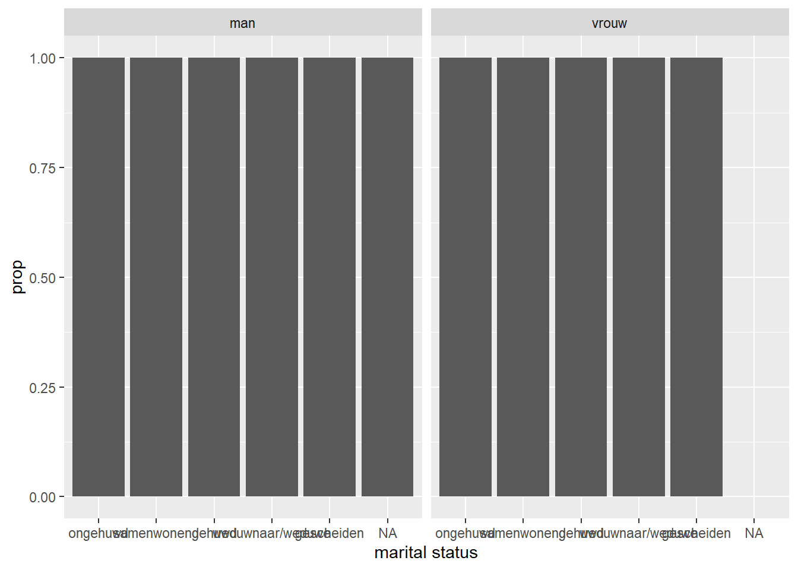
Oefening: Je kunt facet_wrap() ook inzetten om panelen voor combinaties van twee variabelen te maken. Probeer dat bij de vorige plot eens voor gender én of iemand wel of geen diabetes patiënt is.
1.5 Plotjes vormgeven
1.5.1 Labels
In dit laatste gedeelte kijken we kort naar een paar belangrijke functies om onze plotjes beter vorm te geven. Denk aan het toevoegen van labels, zoals een titel van de plot en op de assen, maar ook het formatteren van de legenda.
Laten we de scatterplot tussen leeftijd en bloeddruk, gestratificeerd op gender er weer bij pakken. We gaan eerst een goede beschrijving van de plot als titel toevoegen, en duidelijke titels voor de assen. Deze attributen kunnen we toevoegen met de functie labs() wat afgekort is voor labels.
ggplot(data = hoorn,
mapping = aes(x = age, y = sbp1s, color = factor(gender))) +
geom_point() +
geom_smooth(method = "lm") +
labs(
x = "Leeftijd in jaren",
y = "Systolische bloeddruk 1e meting (mmHg)",
title = "Figuur 1: Relatie tussen systolische bloeddruk en leeftijd"
)`geom_smooth()` using formula = 'y ~ x'Warning: Removed 1 row containing non-finite outside the scale range
(`stat_smooth()`).Warning: Removed 1 row containing missing values or values outside the scale range
(`geom_point()`).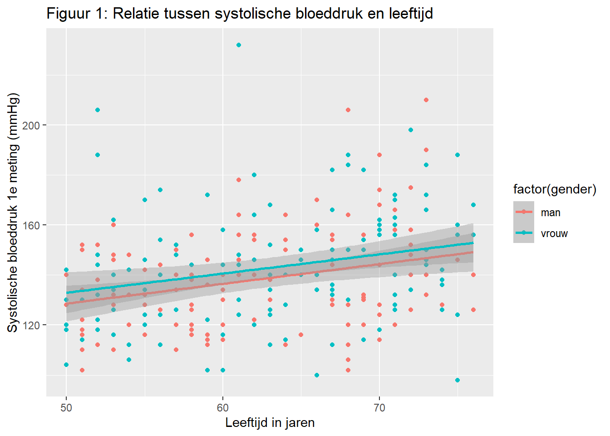
1.5.2 Eenheden van assen
Er zijn ook nog allerlei opties om de eenheden op de assen te formatteren, wat nu automatisch in stapjes van 10 is gedaan maar ingesteld kan worden naar wens. Met dezelfde functie kunnen we ook de labels van onze kleuren instellen, die nu nog met 0 en 1 worden aangegeven. Deze verzameling van functies vallen onder scale_() zoals bijvoorbeeld scale_x_continuous(). Deze functie kunnen we gebruiken om de x-as met een continue gegeven, zoals leeftijd, te formatteren.
ggplot(data = hoorn,
mapping = aes(x = age, y = sbp1s, color = factor(gender))) +
geom_point() +
geom_smooth(method = "lm") +
labs(
x = "Leeftijd in jaren",
y = "Systolische bloeddruk 1e meting (mmHg)",
title = "Figuur 1: Relatie tussen systolische bloeddruk en leeftijd",
color = "Geslacht"
) +
scale_x_continuous(
breaks = seq(from = 0, to = 90, by = 5)
)`geom_smooth()` using formula = 'y ~ x'Warning: Removed 1 row containing non-finite outside the scale range
(`stat_smooth()`).Warning: Removed 1 row containing missing values or values outside the scale range
(`geom_point()`).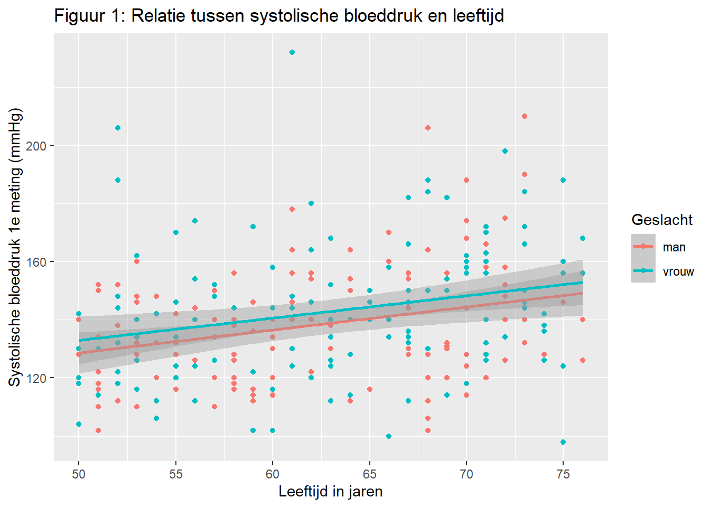
De waarden van het legenda formatteren kan op meerdere manieren. We kunnen de factor van gender om zetten in een factor variabele met labels als waarnemingen, waardoor het automatisch gaat. We kunnen ook een scale_() functie gebruiken om deze handmatig in te stellen. In ons geval gebruiken we dan scale_color_manual(), omdat het om de kleur variabele gaat, en we deze handmatig (manual) in willen stellen.
ggplot(data = hoorn,
mapping = aes(x = age, y = sbp1s, color = factor(gender))) +
geom_point() +
geom_smooth(method = "lm") +
labs(
x = "Leeftijd in jaren",
y = "Systolische bloeddruk 1e meting (mmHg)",
title = "Figuur 1: Relatie tussen systolische bloeddruk en leeftijd",
color = "Geslacht"
) +
scale_x_continuous(
breaks = seq(from = 0, to = 90, by = 5)
) +
scale_color_manual(
labels = c("Man", "Vrouw"), values = c("red", "blue")
)`geom_smooth()` using formula = 'y ~ x'Warning: Removed 1 row containing non-finite outside the scale range
(`stat_smooth()`).Warning: Removed 1 row containing missing values or values outside the scale range
(`geom_point()`).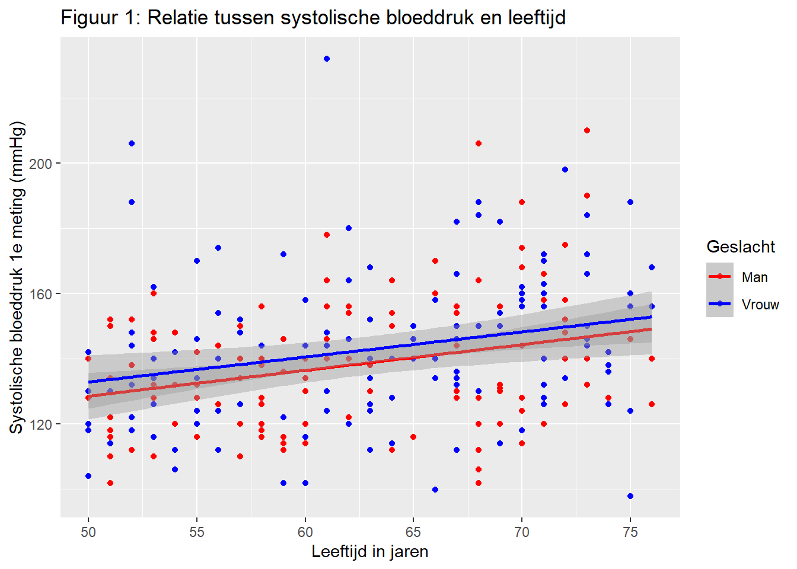
Hier zie je ook dat je met de kleuren van je punten en lijnen kunt spelen! Dit is slecht het tipje van de sluier, er zijn nog ontelbaar andere mogelijkheden!
Oefening: Maak de plot nog eens, maar kies nu kleuren die je zelf prettig vindt om te zien.